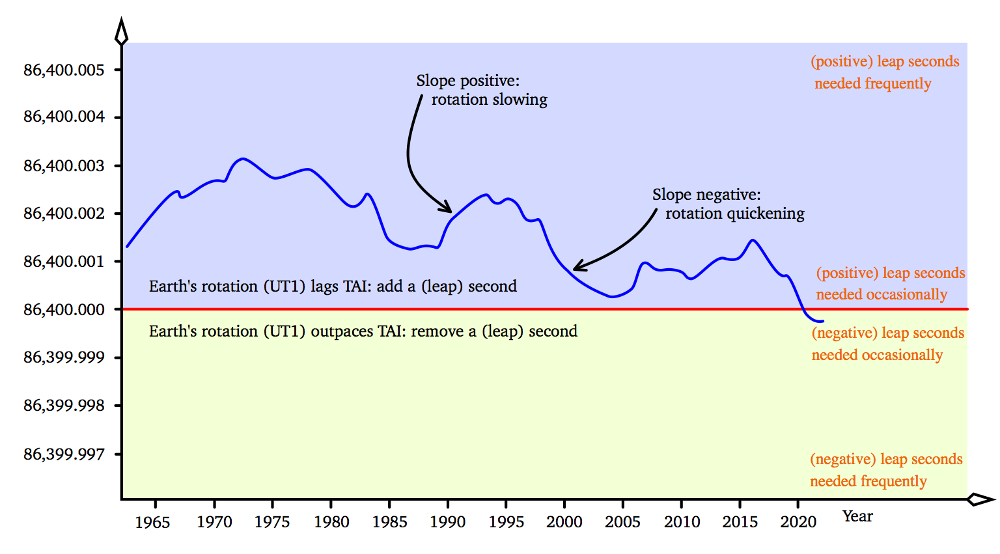

By Don Koks, 2023.
Over the last few decades, at intervals of a few years, precise clocks around the world have been paused for one second, either at the end of June or the end of December. These pauses don't conform to a schedule; rather, they are made only when needed, and confining them to June and December is just a convention. Pausing a clock for a second is equivalent to inserting a second into its record of passing time. This infrequently inserted second is called a leap second. We need leap seconds because our "international clock" ticks just a little too quickly for our civil needs, and so must be stopped every once in a while—to rein it in, so to speak. Because of the disruption that stopping the international clock can cause, it has been convenient to wait until that clock has gotten almost one second ahead of where it should be, before stopping it for a whole second.
To explain what's going on, we must recognise that our timing needs require two timing standards (at least: we'll add a third standard shortly). The first standard is called UT1 ("universal time [version] 1"), which essentially measures Earth's rotation angle relative to the fixed stars, and hence is allied to our civil needs of knowing when the Sun will rise and set—which is important because the motion of the Sun governs our lives. The second time standard is called TAI ("international atomic time", with a reversed acronym to keep the French happy, since they are big timing players). TAI is measured by atomic clocks, and defines the SI second. TAI clocks tick a little faster than UT1 clocks: that is, the TAI second is a bit shorter than the UT1 second. Why is that?
A century ago, the second was defined such that the length of the mean solar day—the average time between the Sun's meridian transits—was 24 hours, or 24 × 60 × 60 seconds = 86,400 seconds. The use of "average" here was problematic: how might this second be reproduced in the laboratory? With the advent of atomic clocks, we could do better: we could create a time standard that was independent of the Sun's motion in our sky (the average of which is related to UT1). The result was that in 1967, the TAI second was defined to be the length of time taken for a particular caesium isotope to emit 9,192,631,770 wavelengths of light when undergoing a particular electronic transition. This modern second, being based on the atom, is reproducible in the lab. Presumably (I wasn't there to ask them) researchers chose this number of wavelengths of light in an attempt to fit exactly 86,400 of the new TAI seconds into one mean solar day. Given that any particular solar day generally doesn't have the same length as a mean solar day, researchers cannot have been expected to get things exactly right. They did very well, but fitting exactly 86,400 of the new SI seconds into one mean solar day was always going to be a big ask, and they didn't quite succeed. If the SI second had instead been defined to be 9,192,631,997 wavelengths of caesium light, it would've been a much better fit to the mean solar day [1]. Additionally, Earth's spin rate slows such that the mean solar day lengthens by one or two milliseconds every century, and researchers seem to have based the new TAI second on extremely old data. The result was that from the very start, TAI clocks counted out about 86,400.001 seconds in a mean solar day (which is, by definition, 86,400 UT1 seconds: the 24 UT1 hours that govern our civil lives).
Because TAI clocks ticked too quickly for our civil needs (UT1) from the very start, the reading on TAI clocks began to creep ahead of UT1. After one day, TAI clocks displayed 0.001 seconds ahead of UT1. This didn't greatly affect anyone, but three years (about 1000 days) after the introduction of the atomic second, TAI clocks were a full second ahead of UT1 clocks, and things were looking more out of kilter. In hindsight, this was nothing to be concerned about; but researchers of the time felt that a one-second mismatch was unacceptable. What to do? We had the option of pausing TAI clocks for one second. But messing with these clocks didn't seem to be a good idea. Instead, we created a copy of a TAI clock and called it a UTC clock [2]. We did not stop the TAI clock. In a sense, the TAI clock was relegated to a lab and left to tick indefinitely, never being interfered with. Now we focussed on the UTC clock, and stopped that for a second when it had gotten a second ahead of UT1. Stopping UTC for a second is equivalent to inserting a second into its display, which then counts
23:59:58 23:59:59 23:59:60 00:00:00 00:00:01 00:00:02and so on. This was called "adding a leap second". UTC clocks tick at exactly the same rate as TAI clocks: they both use the atomic second (the SI second). But each time we add a leap second, UTC falls behind TAI by one second. The first leap second occurred in 1972, and now in mid 2023, UTC is 37 seconds behind TAI.
Adding a leap second every three years is only necessary if Earth spins at a rate such that 86,400.001 SI (TAI) seconds fit into a mean solar day. In the 1960s, Earth entered a period in which its spin slowed strongly, so that by the mid 1970s, a mean solar day lasted for 86,400.003 SI seconds. Now TAI/UTC was pulling ahead of UT1 three times faster than it had before, and a leap second had to be added every year instead of every three years. The figure shows the length of a mean solar day (in atomic seconds) versus the date.

When the curve is in the blue zone, Earth's rate of spin is comparatively slow: more than 86,400 SI seconds fit into a mean solar day, and a leap second must occasionally be added. When the curve is in the yellow zone, Earth's rate of spin is comparatively fast: less than 86,400 SI seconds fit into a mean solar day, and a leap second must occasionally be "subtracted": that is, rather being stopped for a second, UTC clocks are jumped ahead by a second. Since the introduction of the atomic second, the more precise version of the curve we have drawn (—ours is a smoothened version of that more precise curve) has sometimes fluctuated into the yellow zone for short periods; but never long enough to compel us to subtract a leap second.Notice an important point on the graph: the zone that the curve is in, blue or yellow, does not tell us the curve's slope, and vice versa. The zone colour tells us whether a leap second is added or subtracted. The curve's slope tells us whether Earth's spin is quickening or slowing. A positive slope means Earth's spin is slowing; then, regardless of which zone the curve is currently in, that slope will eventually send the curve into the blue zone, and a leap second will be added. But consider that the curve can be in the blue zone and yet have a negative slope. In that case, Earth's spin rate is increasing, but leap seconds still need to be added occasionally.
No, it doesn't, for the reason given in the last paragraph. Having to add a leap second means that the curve is in the blue zone, but that tells us nothing about the slope of the curve, which must be positive for Earth's rotation to be slowing. Even though 27 leap seconds have occurred since their introduction in 1972, Earth's rotation has quickened overall since then, as is evident from the overall negative slope of the graph. It's a common mistake to think that the existence of leap seconds means that we are watching Earth's rotation slow before our very eyes. No one makes the mistake of thinking that the need for a leap day every four years implies some kind of slowing of Earth's passage around the Sun. So why do so many think that the occasional need for a leap second implies that Earth's rotation is slowing?
Part of the problem is that even the precision-timing community can confuse the curve's zone with its slope. For example, see the US Naval Observatory's Circular number 179, which describes the International Astronomical Union's utterances on time, with the words "the tidal deceleration of the Earth's rotation [...] causes UT1 [or UTC, since leap seconds keep the two within about a second of each other] to lag increasingly behind [TAI]". This lag (which I described some paragraphs up) is caused by the UTC clock ticking too quickly for civil purposes; but whether that too-quick ticking has its roots in a slowing of Earth's rotation is another question entirely.
UTC clocks are no different to your wristwatch: if your watch gets a little ahead every day, you cannot infer that Earth's spin is slowing. You cannot infer anything; but you might make the infinitely more probable guess that your watch ticks faster than it should. And so you correct it occasionally. Leap seconds are the same idea: they are just a correction to UTC clocks because those clocks tick just slightly too quickly to match our days and our nights over a long period.
The length of Earth's day is currently thought to increase by one or two milliseconds per century, being probably due mostly to tidal friction caused by the Moon. It follows that if Earth's rotation were to stop slowing while the curve was in the blue zone, we would still have to insert leap seconds into UTC indefinitely, for the simple reason that the curve was in the blue zone. UTC clocks would simply be ticking too quickly for civil needs, and so, as with any fast-ticking clock, they would have to be paused from time to time. The leap second accomplishes just that. Even if Earth's rotation rate began to increase, leap seconds would still be required until the curve had been in the yellow zone for some time. So, a need for leap seconds does not imply that Earth's spin is slowing. As I said above, 27 leap seconds have occurred since their introduction in 1972, and yet Earth's rotation has quickened overall since then.
With Earth's spin quickening as of late, it's thought that in the next few years, the curve will be well and truly in the yellow zone. That means we might have to "subtract a leap second" soon.
Compare the tick rates of two super-accurate clocks, one on Earth's equator and the other at one of its poles. In the inertial frame in which Earth spins, the equator clock is moving, and relativity says that this motion has a slowing effect on its tick rate compared to the pole clock. But the equator clock happens to be in a slightly weaker gravity field—a consequence of Earth's oblate shape—and relativity says that this weaker gravity has a quickening effect on the equator clock's tick rate compared to the pole clock. Remarkably (at least, to a high approximation), these two effects cancel, and time everywhere on Earth's geoid (approximately mean sea level) proceeds at the same rate. This can be verified from the Schwarzschild metric in general relativity, and can be argued on general grounds without appealing to a metric. (Whether it is exactly true is a knotty problem in relativity, and is not known.) This fact is used to define TAI. Modern precise timers create plots of the length of the day that they interpret as showing irregularities in Earth's spin rate from day to day. Currently this is achieved by "very long baseline interferometry" measurements of astronomical radio sources, made by radio dishes widely spaced on Earth. The measurements made by these dishes are correlated to deduce the geometry of the dishes relative to the radio sources, and Earth-rotation specialists use this data to infer knowledge of Earth's spin rate as a function of time.
That said, were Earth's spin rate to change, then for the TAI that governs the measurements of these dishes to remain well defined, the dishes would have to continue either to remain on the geoid, or to have their readings interrelatable via the concept of a geoid. If Earth's spin rate changes on a time scale of one day, then it's not clear whether Earth's actual rocky surface (which dictates where the dishes are) is able to adjust continuously to conform to that geoid. In fact, Earth's geoid does appear to be continually changing on the order of at least tens of centimetres. So, it's not clear whether the timing measurements that say Earth's spin rate is changing have come from a set of radio dishes whose clocks are ticking at the same rate. In that case, all bets are off that the numbers make any sense at all. Precise timing is not a straightforward subject!
[1] Daniel Kleppner, Time Too Good to be True, Physics Today, March 2006, page 11.
[2] UTC stands for "coordinated universal time", a wording whose precise meaning is unclear; but in a relativistic sense, UTC is a useful time coordinate. The rearrangement of the acronym is not only a compromise between English and French initial letters, but it resembles "UT1" in appearance.